LUNES•JUEVES
PRESS BANCA
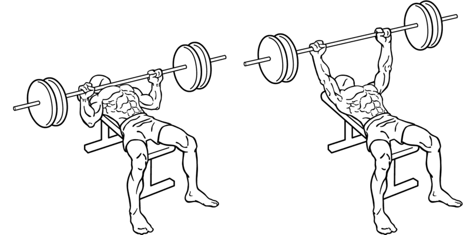El press de banca comienza con la barra, que pesa típicamente entre 15 y 20 kg (33 a 45 libras), o con un peso adicional ligero para centrarse en la técnica.
Es recomendable tener un ayudante (spotter) para asistir con la carga y contar las repeticiones. Te acuestas boca arriba en la banca,
agarrando la barra un poco más ancha que tus hombros, extendiendo los brazos
casi por completo. Levantas la barra del soporte con la ayuda del
spotter y luego bajas lentamente hacia el pecho flexionando los codos, para después extender los codos y volver a levantarla a la posición inicial.
Es importante mantener la espalda plana en la banca, retrayendo los omóplatos y evitar arquearla. Los movimientos deben ser controlados y
equilibrados, con la asistencia del spotter si es necesario
PRESS BANCA INCLINADO
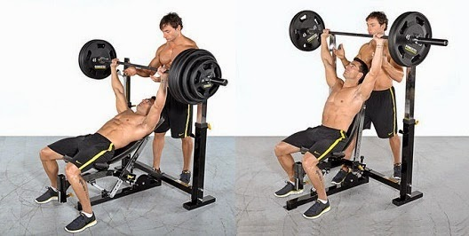1= Túmbate en un banco inclinado entre 15 y 30 grado
2= Coloca las manos separadas el ancho de los hombro
3= Empuja la barra hacia arriba hasta que los brazos estén totalmente extendido
4= Lentamente baja la barra hacia el pecho, doblando los codos y manteniendo los antebrazos verticale
5= Detente cuando la barra toque suavemente el pecho
6= Empuja hacia arriba la barra con fuerza, extendiendo los brazos para volver a la posición inicial
Para realizar el movimiento, es importante hacer un agarre adecuado. La normativa obliga a agarrar la barra rodeando la misma con el pulgar de
ambas manos.
El press de banca inclinado es ideal para la parte superior del pecho
CRUCES DE POLEA
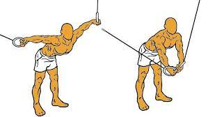
1= justa la resistencia de las poleas para que puedas hacer un movimiento controlado
2= Toma los mangos con las palmas hacia abajo y los brazos ligeramente flexionados
3= Inclina ligeramente el torso hacia adelante y mantén una ligera flexión en las rodillas
4= Coloca las manos en la barra separadas a una distancia ligeramente mayor al ancho de los hombros
5= Jala lentamente de la barra hacia tu pecho, moviendo los codos hacia atrás
6= Mantén el pecho alto y junta los omóplatos
7= Detente cuando tus codos no puedan ir más atrás
8= Con los puños cerrados y sin modificar la flexión de los codos, moviliza los brazos desde arriba hacia adelante del torso mientras realizas un
cruce de polea, pasando una mano por encima de otra
9= Inspira al final del movimiento y comienza el regreso de manera controlada a la posición inicial
10= Desde esta posición inicial, sube las poleas hasta la altura de los hombros, sin llegar a sobrepasarlos.
El cruce de poleas es una de las máquinas de musculación preferidas de para los que desean ganar masa muscular en el área pectoral.
REMO TUMBADO
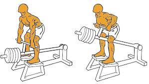
1-Acuéstate boca abajo en un banco plano o inclinado, con las piernas extendidas y los pies apoyados en el suelo.
2-Toma una barra con un agarre pronado (palmas hacia abajo) ligeramente más ancho que el ancho de los hombros.
3-Mantén los brazos extendidos frente a ti, dejando que la barra cuelgue.
4-Contrae los músculos de la espalda baja y las escápulas juntas para estabilizar la parte superior del cuerpo.
5-Inhala y luego exhala mientras llevas la barra hacia arriba, tirando de los codos hacia atrás y manteniendo los brazos cerca del cuerpo.
6-Mantén la contracción en la parte superior de la espalda durante un segundo.
7-Inhala mientras bajas la barra de manera controlada hasta que los brazos estén completamente extendidos.
8-Repite el movimiento durante el número deseado de repeticiones.
REMO SENTADO
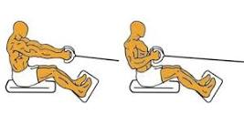
1-Coloca un asiento en frente de la máquina de polea con una barra de agarre adjunta.
2-Ajusta el peso de la máquina de polea según tu nivel de fuerza y capacidad.
3-Siéntate en el banco con la espalda recta y los pies firmemente apoyados en el suelo. Mantén una postura erguida durante todo el ejercicio para evitar lesiones en la espalda.
4-Extiende los brazos y agarra la barra con las manos separadas a una distancia un poco mayor que el ancho de los hombros. Las palmas de las manos deben estar mirando hacia adentro (agarre supino).
5- Manteniendo la espalda recta y los codos cerca del cuerpo, tira de la barra hacia tu torso. Concéntrate en contraer los músculos de la espalda mientras realizas este movimiento. Mantén los hombros hacia abajo y hacia atrás para evitar encogerse.
6-Cuando tires de la barra hacia tu torso, exhala y contrae los músculos de la espalda.
7-Lentamente, regresa la barra a la posición inicial mientras inhalas. Extiende completamente los brazos sin bloquear las articulaciones al final del movimiento.
8- Realiza el número deseado de repeticiones, manteniendo siempre la forma adecuada y controlando el movimiento en todo momento.
9-Una vez que hayas completado una serie, descansa brevemente antes de comenzar la siguiente serie.
10-Si el peso se siente demasiado ligero o demasiado pesado, ajusta la configuración de la máquina de polea en consecuencia.
JALON DE PECHO ABIERTO Y CERRADO
1-Agarra la barra con un agarre supino, más ancho que los hombros.
2-Contrae el suelo pélvico y el core.
3-Mantén el pecho levantado.
4-Mueve el torso hacia atrás unos 15º desde la línea vertical.
5-Retrae los omóplatos y eleva el pecho.
6-Tira de la barra hacia la parte superior del pecho mientras aprietas los omóplatos.
7-Los codos deben moverse hacia abajo y no hacia atrás.
8-Lleva la barra a la posición inicial estirando completamente los brazos y estirando los dorsales.
9-Repite el proceso las veces indicadas
MARTES•VIERNES
PRESS MILITAR
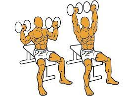
1-Siéntate en un banco con el respaldo a 90º.
2-Coloca las mancuernas a la altura de los hombros, formando un ángulo de 45 grados con los brazos.
3-Sujeta las mancuernas con las palmas de las manos mirando hacia delante.
4-Empuja las mancuernas hacia el techo con un movimiento firme y controlado hasta estirar los brazos, pero sin llegar a bloquear los codos.
5-Activando los músculos de los brazos y los hombros, levanta lentamente el peso por encima de tu cabeza, haciendo una forma triangular que termine con ambas pesas juntas encima de la cabeza.
6-Aprieta los omóplatos y mantenlos juntos mientras haces press militar.
7-Baja lentamente las mancuernas hasta que toquen la parte externa del hombro y vuelve a subirlas de forma enérgica.
El press militar es un ejercicio fundamental para desarrollar los hombros.
VUELOS LATERALES
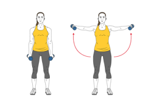
1-Sujeta una mancuerna con cada mano con un agarre neutro (palmas enfrentadas) y los brazos a los lados del cuerpo en su postura natural. Mantén la espalda recta, la mirada al frente, las rodillas ligeramente flexionadas y contrae el abdomen.
2-Levanta los brazos hacia los lados del cuerpo de forma controlada y sin balanceos o movimientos bruscos hasta que los brazos estén en paralelo al suelo. En lugar de mantener los brazos completamente estirados y bloqueados, mantén una ligera flexión de los codos.
3-En la parte alta del ejercicio, las mancuernas deben quedar en línea con los hombros a los lados del cuerpo, con las palmas de las manos mirando hacia el suelo.
4-Quedarse arriba 1 o 2 segundos arriba, bajar y repetir
CURL DE BICEPS ABIERTO
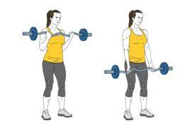
1-Párate con los pies separados al ancho de los hombros.
2-Sostén la barra con las palmas hacia abajo.
3-Contrae el suelo pélvico y el core mientras mantienes el pecho levantado.
4-Con un movimiento similar al de un curl con barra tradicional, lleva la barra a la altura de los hombros.
5-Contrayendo los bíceps, doble los codos totalmente mientras exhalas.
6-Vuelva a la posición inicial con un suave movimiento mientras inhala
CURL DE BICEPS CERRADO EN SCOTT
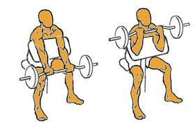
1-Siéntate en el banco Scott con la espalda recta y los hombros hacia atrás.
2-Apoya los brazos sobre el respaldo inclinado del banco.
3-Ajusta bien las axilas, como si estuvieran encajadas.
4-Mantén la mirada al frente.
5-Toma la barra Z con agarre en supinación, es decir, con las palmas de las manos hacia arriba.
6-Coloca la barra al nivel de las caderas.
7-Flexiona los codos hasta llevar la barra a la zona alta del pecho.
8-Mantén la posición un par de segundos.
9-Vuelve a bajar los brazos desflexionándolos.
10-Controla la fase excéntrica sin dejar caer el peso rápidamente
MARTILLO
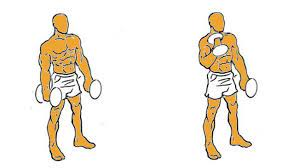
1-Párate con los pies separados al ancho de las caderas.
2-Sostén una mancuerna en cada mano, con los brazos extendidos a los lados del cuerpo y las palmas mirando hacia los muslos.
3-Sin mover los brazos, dobla los codos y lleva las mancuernas hacia los hombros, manteniendo las palmas hacia adentro.
4-Levántalas girándolas hasta debajo de la barbilla, luego empuja hacia arriba.
5-Baja el peso de nuevo a la posición inicial.
6-Repite
EXTENCION DE TRICEPS
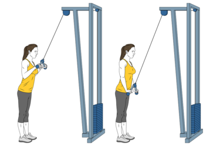
1. Ajusta la polea con un agarre corto y coloca la altura del cable al nivel más alto.
2. Párate frente a la polea y agarra la cuerda con ambas manos, con los codos ligeramente flexionados.
3. Mantén los codos pegados a los costados y las manos cerca de tu frente.
4. Extiende completamente los codos hacia abajo, llevando las manos hacia tus muslos.
5. Lentamente flexiona los codos para volver a la posición inicial, manteniendo el control del movimiento en todo momento.
EXTENCION DE TRICEPS CON POLEA TRASNUCA
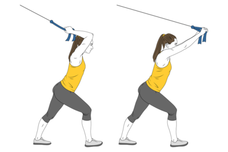
1-Colócate de espaldas a la polea.
2-Inclínate un poco hacia delante para que la polea no te tire hacia atrás.
3-Agarra la cuerda con las dos manos por detrás de la cabeza.
4-Sin mover los codos, estíralos y flexionalos de manera controlada.
5-Presiona la barra suavemente hacia abajo hasta que los brazos estén extendidos completamente.
6-Regresa lentamente a la posición inicial.
7-Espira al final del movimiento
MIERCOLES•SABADO
SENTADILLA HACK
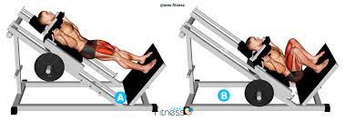
1-Colócate de pie frente a la máquina hack con los hombros debajo de los pads y la espalda recta.
2-Coloca los pies en la plataforma, separados a la anchura de los hombros, con los dedos ligeramente apuntando hacia afuera.
3-Desbloquea la máquina y baja lentamente flexionando las rodillas mientras mantienes la espalda recta.
4-Baja hasta que tus muslos estén paralelos al suelo o hasta donde te sientas cómodo.
5-Empuja con los talones para volver a la posición inicial, manteniendo el control en todo momento.
6-Repite el movimiento durante el número deseado de repeticiones.
EXTENCIONES DE CUADRICEPS
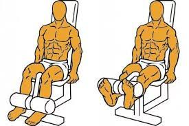
1-Siéntate en la máquina de extensiones de cuádriceps con la espalda bien apoyada en el respaldo y los pies debajo de las almohadillas.
2-Ajusta la máquina para que tus rodillas estén alineadas con el eje de rotación de la máquina y selecciona un peso adecuado para tus capacidades.
3-Agarra las empuñaduras laterales si las hay para mayor estabilidad.
4-Exhala mientras extiendes las piernas hacia adelante, manteniendo los muslos en contacto con el asiento.
5-Mantén la posición extendida por un segundo para maximizar la contracción del cuádriceps.
6-Inhala mientras lentamente regresas a la posición inicial.
Recuerda no bloquear las rodillas al final del movimiento y controlar el peso en todo momento para evitar lesiones. Espero que estos pasos te sean útiles.
FEMORAL TUMBADO
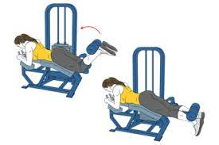
1-Ajusta el peso deseado en la máquina de flexión de piernas y siéntate en el banco con la espalda apoyada en el respaldo.
2-Coloca los tobillos debajo de las almohadillas acolchadas y sujeta las empuñaduras laterales si están disponibles.
3-Asegúrate de que tus piernas estén extendidas frente a ti.
4-Exhala mientras flexionas las rodillas y levantas las almohadillas hacia tus glúteos, manteniendo la parte superior del cuerpo estable.
5-Mantén la posición por un segundo para maximizar la contracción en los músculos isquiotibiales.
6-Inhala mientras lentamente regresas a la posición inicial, extendiendo las piernas.
ELEVACION DE TALON
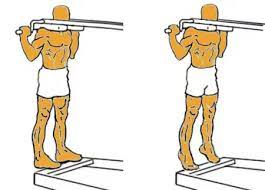
1-Ajusta el peso deseado en la máquina de elevación de talones y párate con la parte delantera de los pies en el borde superior de la plataforma y los hombros debajo de los pads.
2-Levanta lentamente los talones tanto como puedas, contrayendo los músculos de la pantorrilla en la parte superior del movimiento.
3-Mantén la posición elevada por un segundo para maximizar la contracción en las pantorrillas.
4-Baja lentamente los talones de vuelta a la posición inicial, manteniendo el control del movimiento.
Recuerda mantener una buena postura, controlar el peso y evitar bloquear las rodillas. Este ejercicio es excelente para desarrollar fuerza y tamaño en las pantorrillas
ABDUCTORES
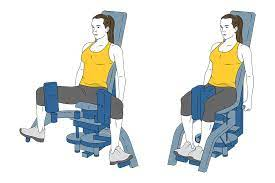
1-Ajusta el peso deseado en la máquina de abductores y siéntate en el banco con la espalda inclinada hacia delante.
2-Coloca las piernas alrededor de los rodillos acolchados y ajusta la distancia para que tus piernas estén cómodamente separadas.
3-Exhala mientras empujas las piernas hacia adentro, juntando los muslos tanto como puedas y contra la resistencia de la máquina.
4-Mantén la posición juntada por un segundo para maximizar la contracción en los músculos abductores.
5-Inhala mientras lentamente permites que las piernas vuelvan a la posición inicial, controlando el movimiento.
Recuerda ajustar el peso adecuado y mantener una buena técnica durante todo el ejercicio. Este ejercicio es excelente para fortalecer los músculos abductores de la cadera
HIP THRUST
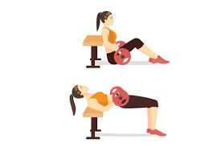
1-Siéntate en el suelo con tus hombros apoyados en un banco y coloca una barra sobre tus caderas.
2-Rueda la barra hacia tus caderas y sujétala con un agarre firme. Asegúrate de que esté bien equilibrada antes de comenzar el ejercicio.
3-Coloca tus pies planos en el suelo, cerca de tus glúteos, con las rodillas dobladas.
4-Empuja a través de tus talones y levanta las caderas hacia arriba mientras mantienes la barra en su lugar.
5-Lleva las caderas hacia arriba hasta que tu cuerpo forme una línea recta desde tus hombros hasta tus rodillas.
6-Mantén la posición por un segundo para maximizar la contracción en tus glúteos.
7-Lentamente baja las caderas de vuelta a la posición inicial, manteniendo el control del movimiento.
Recuerda mantener una buena forma durante todo el ejercicio y utilizar un peso adecuado para tu nivel de fuerza. El hip thrust con barra es un excelente ejercicio para fortalecer los glúteos y los músculos de la parte posterior del cuerpo
PANTORRILAS SENTADO
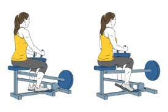
1-Siéntate en la máquina de pantorrilla con las piernas debajo de las almohadillas y los pies apoyados en la plataforma.
2-Ajusta el peso deseado en la máquina y coloca las rodillas debajo de las almohadillas de manera que los cojines descansen en la parte superior de tus piernas.
3-Levanta los talones tanto como puedas al empujar la plataforma con la parte delantera de los pies.
4-Mantén la posición elevada por un segundo para maximizar la contracción en los músculos de la pantorrilla.
5-Lentamente baja los talones de vuelta a la posición inicial, manteniendo el control del movimiento.